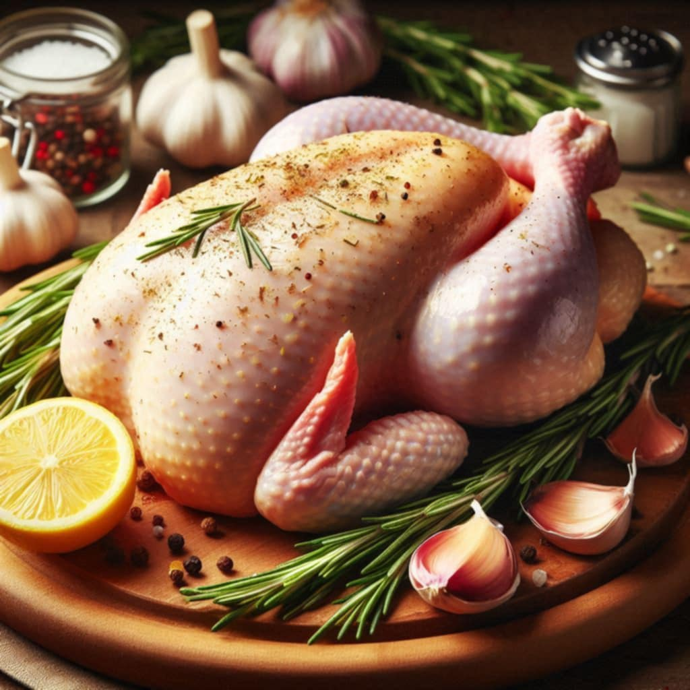
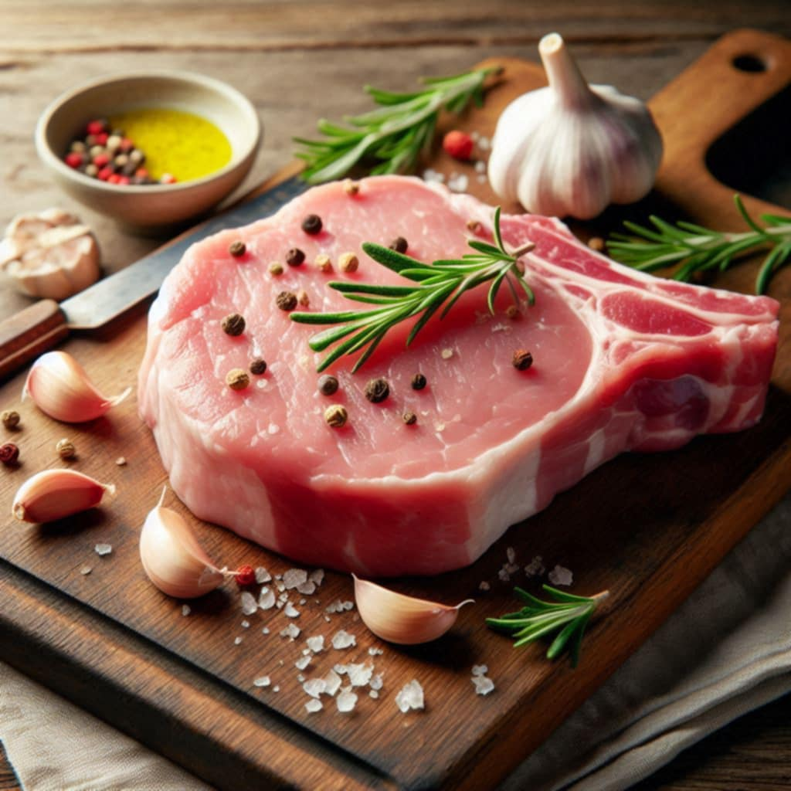

Chicken
Our premium chicken is fresh, tender, and completely free from hormones and antibiotics, making it a healthier choice for your family. Sourced from trusted, ethically-run farms, our chickens are raised with care, ensuring that every bite is packed with rich, natural flavor. Whether you're grilling, roasting, or frying, our chicken is versatile and perfect for a wide range of dishes, from hearty family dinners to gourmet meals. High in protein, low in fat, and full of essential nutrients, our chicken not only tastes delicious but also supports a balanced, healthy lifestyle. Experience the difference in quality and elevate your meals with the Finest chicken, crafted for those who value both taste and nutrition.

Pork
Sustainably caught and flash-frozen for maximum freshness, Tropical Sea Bliss brings vibrant flavors to your table. Perfect for grilling, frying, or stewing, this fish is both delicious and healthy, free from harmful additives. Elevate your meals with the essence of Philippine cuisine—bring home Tropical Sea Bliss today!

Beef
Our premium beef is tender, flavorful, and responsibly sourced from trusted farms. Raised without hormones or antibiotics, it’s a wholesome choice for your family. Rich in protein and essential nutrients, our beef is perfect for grilling, roasting, or stewing, bringing hearty, delicious meals to your table. Experience the quality and savor the taste of premium beef crafted for those who value nutrition and flavor.